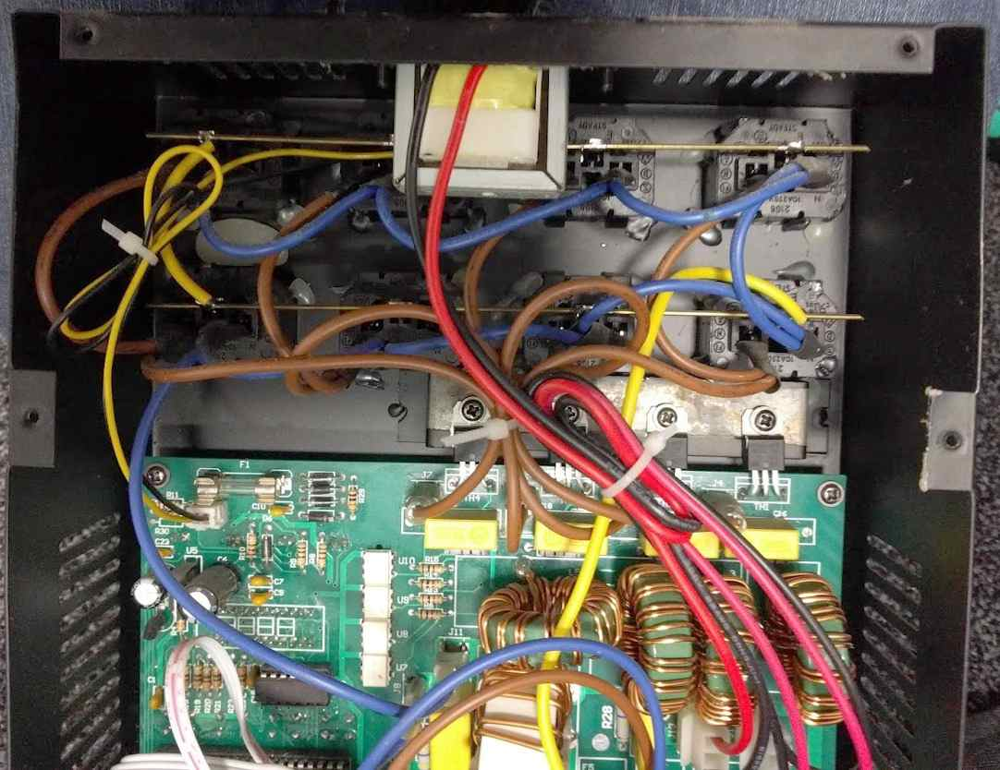
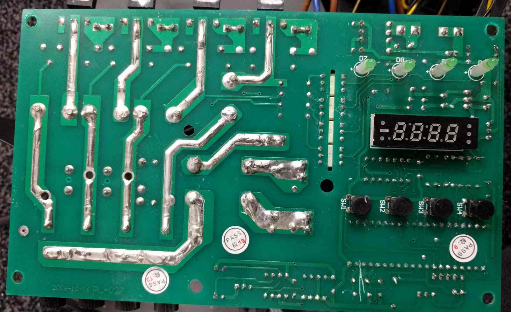

Repair of QTX DP4 Dimmer Pack.
£80 Four ...two channel leading edge dimmer pack with DMX input and internal chase presets.

Acquisition
The item was found listed on eBay as follows:
Channels 2 and 3 not working, even though the fuses have been replaced with new fuses which are known to be working.
Otherwise everything else works and in good condition.
Power cable not supplied.
Sounds like a nice easy job. Two failed channels hints to a single common issue (see Amazon reviews below). Two working channels to test and compare against.
For £32, why not?
While it's still available for £80.32 on Amazon Prime, the one star reviews using phrases like "junk", "dead", "KEEP AWAY" and "AVOID" were somewhat concerning.
As usual, the manual is available online.
Teardown
After removing the poor quality phillips head M3 screws and therefore the device cover, the first thing to notice is the flux residue.
Both sides of the PCB were covered in a delightful layer that was somehow both sticky and crunchy.

The manufacturer didn't seem to trust the IEC C13 sockets to hold themselves in place, so added hot glue around them.
The very same hot glue that was falling out in pieces when the device was opened for the first time (along with the glass display cover).
I'm not sure I trust the ridgid soldered brass earth bar between the sockets.
I would have preferred a more flexible, mechanically forgiving crimped wire daisy chained connection (similar to the neutral).

Reverse Engineering
When the device is put into chase mode, all the channel indicator LEDs light, showing that the microcontroller (AT89C52) is still alive (phew).
Triacs need a load to latch and operate correctly. Around 60 mA (14 W) in this case. Without this, simply measuring the output voltage of each channel tells us nothing.
With the device powered off and the load disconnected, the triacs were tested in circuit.
For the two working channels, the resistance between MT1 & MT2 (triac anode 1 & anode 2) was around 50 MΩ, decreasing at a decreasing rate and tending towards 40 MΩ.
When the triac gate was connected to MT2 the resistance between MT1 & MT2 decreased to around 76 Ω.
This is only true for channels 1 & 4 as channel 2 & 3 (faulty) behave differently.
This narrows down the fault to the triac driving circuitry, therefore ruling out the control circuitry and digital control signal.
A rough schematic of the dimming circuitry was created, including the optoisolators (which double as triac drivers, how fancy).

With the device still powered off, the optoisolator diode inputs (pin 1 & 2) were tested using a multimeter in diode check mode.
All four ICs tested for about Vf = 1 V which matches the datasheet.
With the device powered on, the voltage on the optoisolator output (pins 4 & 6) was measured.
The result depended on the state of the channel and was about 0.03 V - 0.05 V for the channels which were said to be working.
The two channels which were suspected to be faulty measured between 2.7 V and 20 V. Bingo.
Always handy when the pinouts are printed on the packages. ;)

It was at this point that the sporadicness of the gate traces running under the inductors, power resistors (100 Ω) and safety caps became apparent.
To confirm the triac drivers were in the same order as the triacs, continuity measurements were performed to help follow the gate traces.

The good news is that the outer two channels (1 & 4 - green) are in the expected order.
The better news is that the inner channels (2 & 3 - red) aren't connected!
At this point it's entirely possible that the only issues are two broken traces.
Going back to an earlier photo and zooming in... Bingo #2.
I'd guess the sooty spot underneath the capacitor is related to the issue...

Let's get the Tenta 0.22 μF 275 V self healing Class X2 capacitor desoldered and setup the microscope.
(I checked the capacitors too - they're good.)
Repair
The two traces are the gate connections (optoisolator pin 4 -> triac pin 3).
The traces were routed rather close together and it looks like things got a bit heated.
I have no fluxing idea what could have caused this.
Presumably, one channel was on, and another was off. Creating a 230 V potential between the gate pins.
If you thought flux residues would be non conductive, you'd be mostly correct.
While some products are designed to be specifically "no clean" and leave less corrosive and conductive residues,
all liquid flux residues will attract and retain dust. So regardless of which flux was used here, its existance isn't helping matters.
Using 99% isopropyl alcohol, cotton buds and a fibreglass pen, the area was cleaned to allow inspection of the surface below.
Luckily the carbonisation of the PCB is only on the surface, so simply routing around the burnt patch should be sufficient.

The effect of this fault is illustrated in the updated schematic below.

The traces were cut back using a scalpel to give clearance around the burnt area and cleaning was performed again.

Using some MG Chemicals No Clean flux and 0.2 mm diameter enameled copper wire, the two broken traces were repaired.
More cleaning...

A small amount of fast drying epoxy resin was added to the area to keep the replacement traces in place, increase creepage distance and prevent
mechanical interferenace from the corner of the yellow capacitor mounted above.
The class X2 capacitor was soldered back in place, leaving a small space above the repaired trace.
It looks better without using the microscope...
Using the usual method of alcohol, Safetiss lint free tissues and an old toothbrush, all the old flux was removed from the mains section of the PCB.
I refrained from cleaning the front side of the control circuitry as I didn't want to risk breaking anything else before the device could be fully tested.

Testing and Conclusion
See video showing repaired device working normally.
So how would you go about diagnosing this issue without two good channels to compare measurements to?
While this was a fun project and an easy repair, I'm not sure I'd recommend these products for professional use.
While I can't be certain that the failed units described in the Amazon reviews are due to the same issue, it seems entirely possible.
It may be possible that the flux residue in my unit is the fault of a 3rd party, but it's more likely to be due to lack of QC by the manufacturer.
Despite all the stickers...
© James Baber 2020.